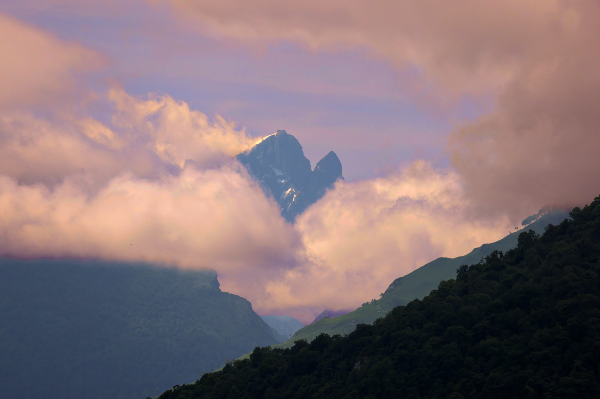
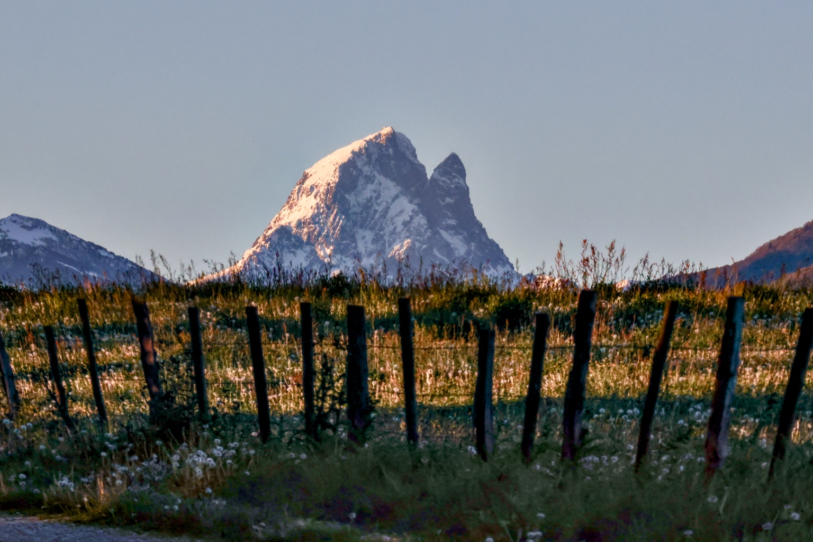
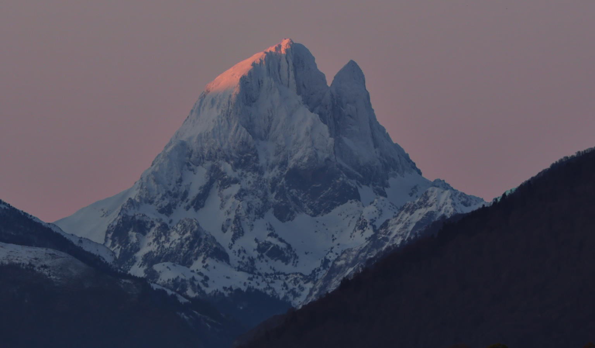
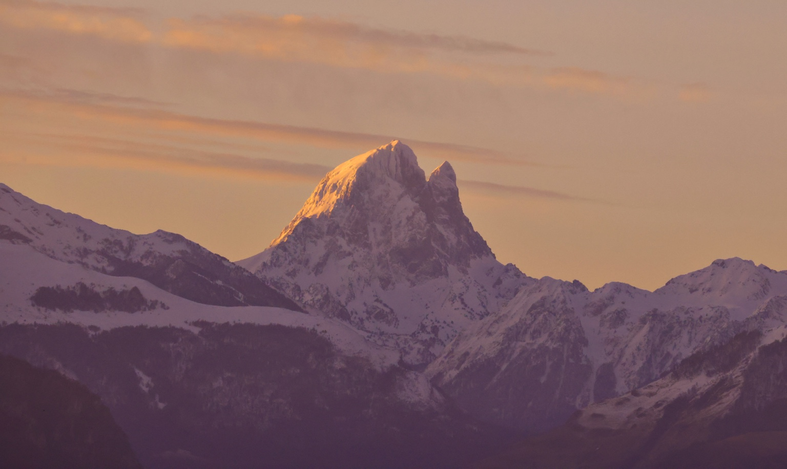
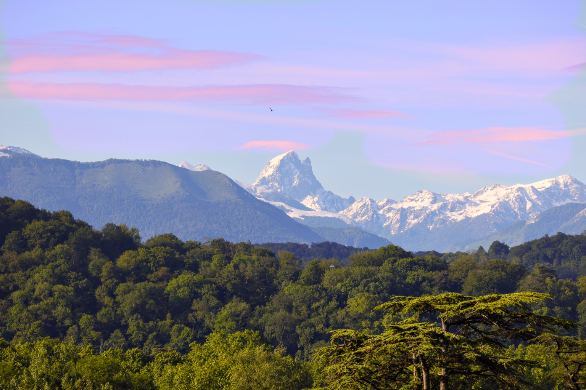
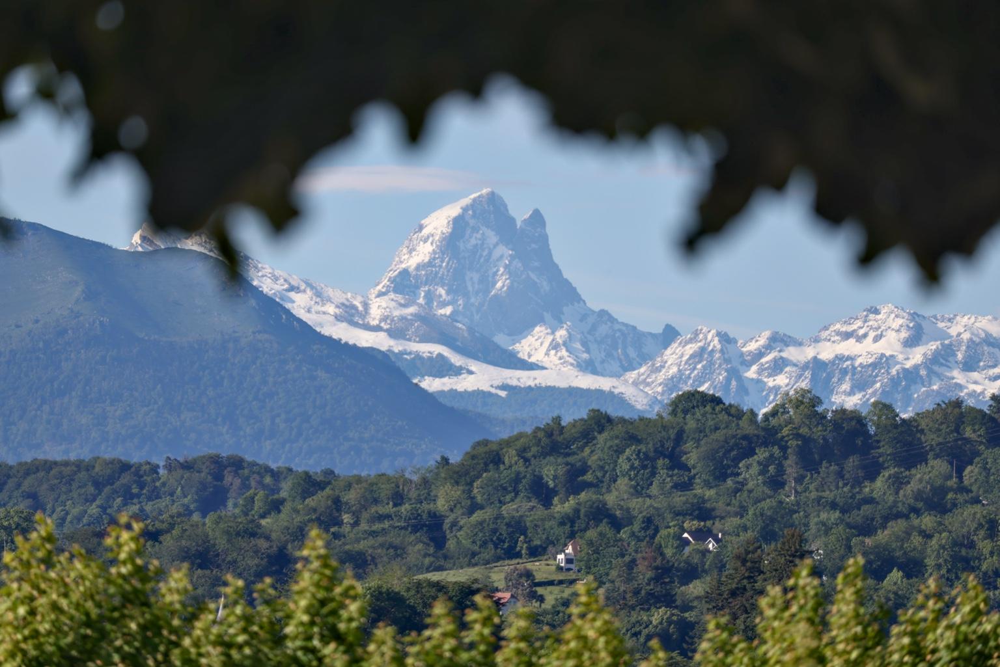
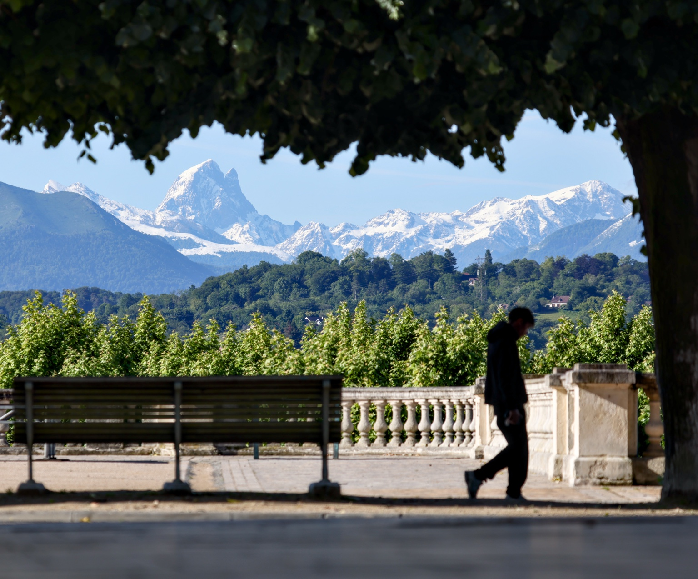
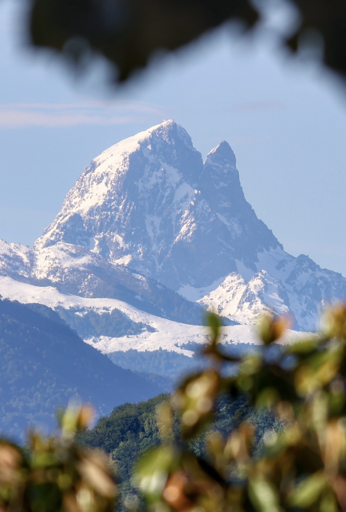

Fred Marulier
Photographe — Pyrénées · Pic du Midi d’Ossau
Mon Histoire
Je n’ai jamais photographié pour remplir des images.
Je photographie pour révéler.
Photographier, pour moi, c’est attendre. Observer la lumière, les nuages, les saisons et laisser le paysage prendre sa place. Le Pic du Midi d’Ossau est devenu au fil du temps un point de repère, une présence que je retrouve sous des visages toujours différents.
Je cherche des images simples, fortes et sincères, où l’atmosphère compte autant que le sujet.
Chaque photographie est pensée comme un tirage d’art.
Une photographie doit pouvoir vivre au-delà de l’écran : sur un mur, dans un intérieur, comme un fragment de lumière et de montagne.
Galerie
29 photographies. Cliquez sur une image pour l’afficher en grand. Les images sont affichées dans leur cadrage d’origine, sans recadrage automatique.










Tirages & contact
Pour connaître les formats, supports et tarifs d’un tirage, indiquez simplement le numéro de la photographie qui vous intéresse.
marulier64@yahoo.com